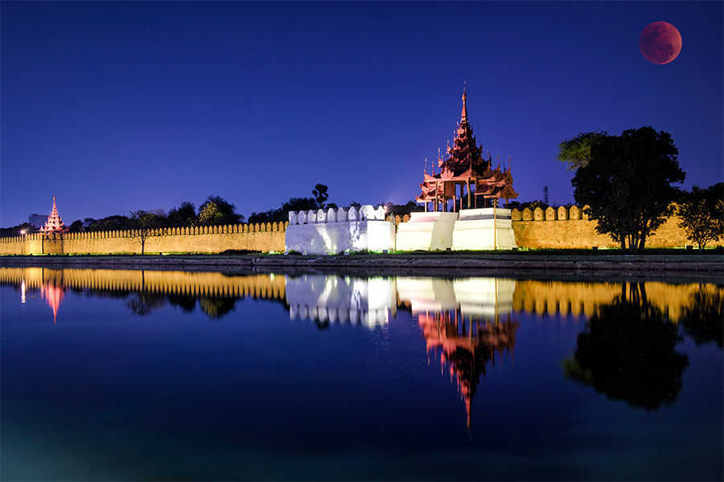
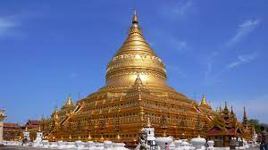
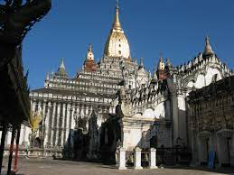
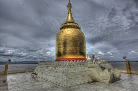
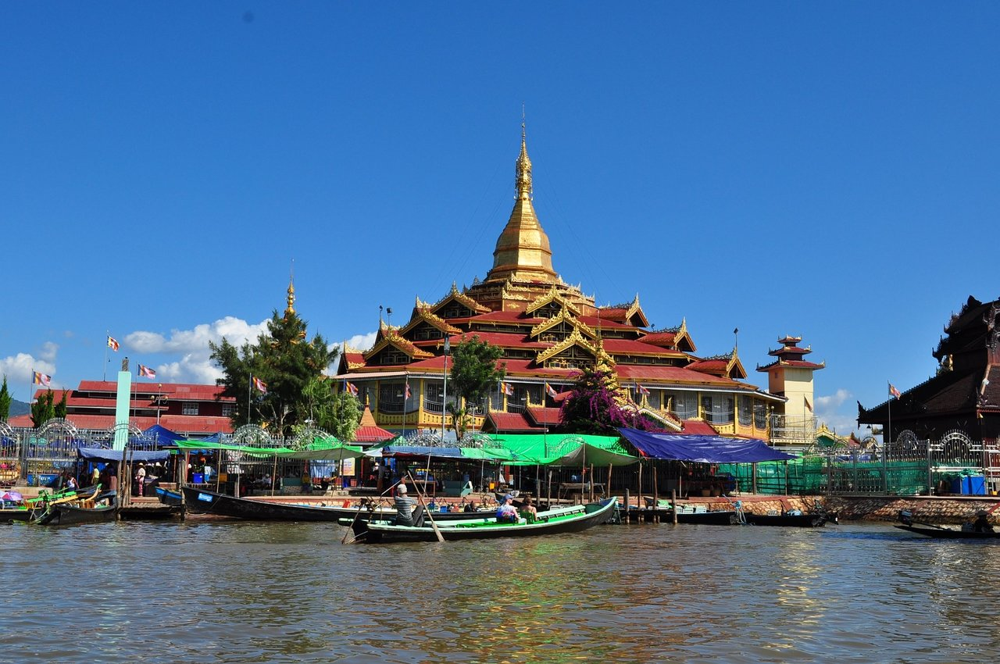
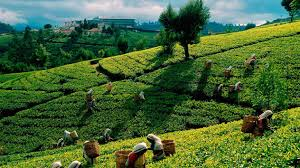
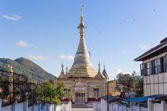

Mandalay
In Mandalay there is a famous pagoda call Maha Myat Muni, and u can go see palace of Mandalay
The Mahamuni Pagoda in Mandalay is home to one of the country's most revered Buddha images which,
over the years, has been covered with gold leaf,
giving it an almost lumpy texture.
It is an important pilgrimage site for the Burmese as this Buddha is believed to be alive.



Bagan
Bagan is known for being home to over 10,000 Buddhist temples and pagodas and being the first kingdom to unify the regions that make up the modern day Myanmar.
Of the 10,000 pagodas and temples, a little over 2,000 remain standing





Taungyi
The city is famous for its hot air balloon festival held annually on the full moon day of Tazaungmon.

Kalaw
Kalaw is famous for the idyllic beauty of rolling hills, verdant mountains, small local villages as well as the colourful daily life here.
Tourists visiting Kalaw often take a short trek passing through scenic natural landscapes and hill villages besides exploring several religious spots here.


Pyin Oo Lwin
Pyin Oo Lwin was founded as the British Hill Station Maymyo. The name Maymyo, translating as May Town,
came from Colonel May of the 5th Bengal Regiment who in 1866 established the town as a holiday location for British Army officers based in Mandalay.